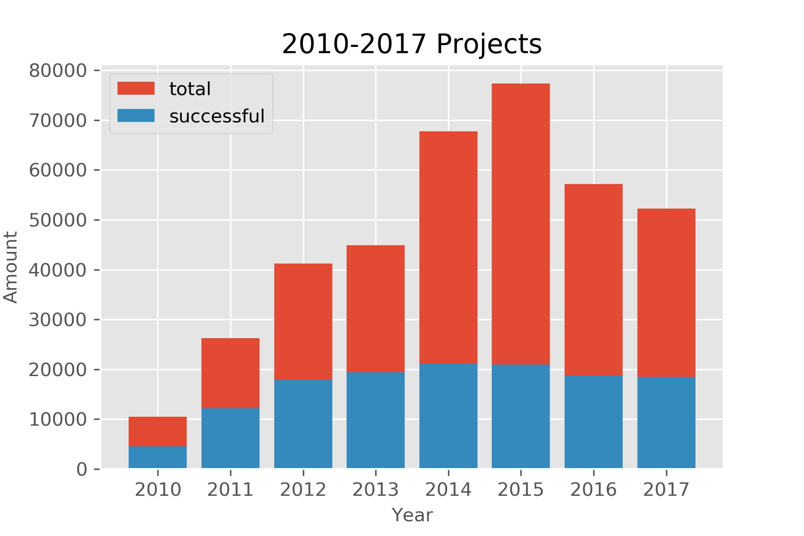

Python Programming
Lecture 10 Data Organization and Visualization
10.1 Pandas (3)
Data Organization
Data of Crowdfunding Projects
Kickstarter Projects from Kaggle.com
Loading .csv file
df = pd.read_csv("ks-projects-201801.csv")
relative path
df = pd.read_csv("data/ks-projects-201801.csv") # Linux or OSX
df = pd.read_csv("data\ks-projects-201801.csv") # Windows
absolute path
file_path = '/home/ehmatthes/data/ks-projects-201801.csv'
df = pd.read_csv(file_path) # Linux or OSX
file_path = r'C:\Users\ehmatthes\data\ks-projects-201801.csv'
df = pd.read_csv(file_path) # Windows
>>> df.shape
(378661, 15)
>>> df.info()
RangeIndex: 378661 entries, 0 to 378660
Data columns (total 15 columns):
ID 378661 non-null int64
name 378657 non-null object
category 378661 non-null object
main_category 378661 non-null object
currency 378661 non-null object
deadline 378661 non-null object
goal 378661 non-null float64
launched 378661 non-null object
pledged 378661 non-null float64
state 378661 non-null object
backers 378661 non-null int64
country 378661 non-null object
usd pledged 374864 non-null float64
usd_pledged_real 378661 non-null float64
usd_goal_real 378661 non-null float64
dtypes: float64(5), int64(2), object(8)
memory usage: 43.3+ MB
Filtering with boolean array
#查看第一行
>>> df.iloc[1,:]
ID 1000003930
name Greeting From Earth: ZGAC Arts Capsule For ET
category Narrative Film
main_category Film & Video
currency USD
deadline 2017-11-01
goal 30000
launched 2017-09-02 04:43:57
pledged 2421
state failed
backers 15
country US
usd pledged 100
usd_pledged_real 2421
usd_goal_real 30000
Name: 1, dtype: object
#根据条件筛选特定行:美国本土项目，筹资金额大于等于30000美刀
>>> df_us = df[df['country']=='US']
>>> df_us30000 = df_us[df_us['goal']>=30000]
#[43312 rows x 15 columns]
Basic Data Description
>>> df_us[['backers','goal','pledged']].describe()
backers goal pledged
count 292627.000000 2.926270e+05 2.926270e+05
mean 113.078615 4.403497e+04 9.670193e+03
std 985.723400 1.108372e+06 9.932942e+04
min 0.000000 1.000000e-02 0.000000e+00
25% 2.000000 2.000000e+03 4.100000e+01
50% 14.000000 5.250000e+03 7.250000e+02
75% 60.000000 1.500000e+04 4.370000e+03
max 219382.000000 1.000000e+08 2.033899e+07
Arithmetics (+,-,/,//,*,**)
>>> df_us['percentage'] = df_us['pledged']/df_us['goal']
Sorting and Ranking
When sorting a DataFrame, you can use the data in one or more columns as the sort keys. To do so, pass one or more column names to the by option of sort_values.
>>> df_us.sort_values(by='goal', ascending=False)
>>> df_us.head().sort_values(by=['main_category','goal'],
...: ascending=[True,False])
ID ... percentage
2 1.000004e+09 ... 0.004889
1 1.000004e+09 ... 0.080700
4 1.000011e+09 ... 0.065795
5 1.000014e+09 ... 1.047500
3 1.000008e+09 ... 0.000200
>>> df_us.head().rank()
ID name category ... usd_pledged_real usd_goal_real percentage
1 1.0 2.0 3.5 ... 4.0 3.0 4.0
2 2.0 5.0 3.5 ... 2.0 4.0 2.0
3 3.0 4.0 2.0 ... 1.0 1.0 1.0
4 4.0 1.0 1.0 ... 3.0 2.0 3.0
5 5.0 3.0 5.0 ... 5.0 5.0 5.0
>>> df_s=pd.DataFrame({'sales':[100,200,300,200]})
sales
0 100
1 200
2 300
3 200
>>> df_s.rank()
sales
0 1.0
1 2.5
2 4.0
3 2.5
>>> df_s.rank(method='first') #数值
sales
0 1.0
1 2.0
2 4.0
3 3.0
min and max
>>> df_s.rank(method='min')
sales
0 1.0
1 2.0
2 4.0
3 2.0
>>> df_s.rank(method='max')
sales
0 1.0
1 3.0
2 4.0
3 3.0
Counting
>>> df_us['main_category'].value_counts()
Film & Video 51922
Music 43238
Publishing 31726
Games 24636
Art 22311
Design 21690
Technology 21556
Food 19941
Fashion 16584
Comics 8910
Theater 8709
Photography 7988
Crafts 6648
Journalism 3540
Dance 3228
Name: main_category, dtype: int64
>>> df_us['main_category'].value_counts(
...: normalize = True)
Film & Video 0.177434
Music 0.147758
Publishing 0.108418
Games 0.084189
Art 0.076244
Design 0.074122
Technology 0.073664
Food 0.068145
Fashion 0.056673
Comics 0.030448
Theater 0.029761
Photography 0.027298
Crafts 0.022718
Journalism 0.012097
Dance 0.011031
Name: main_category, dtype: float64
Searching
>>> df_us['main_category'].isin(['Music','Games'])
>>> df_us[df_us['main_category'].isin(['Music','Games'])==True]
Time
from datetime import datetime
>>> now = datetime.now()
>>> now
datetime.datetime(2020, 10, 29, 11, 50, 46, 908483)
>>> now.year, now.month, now.day
(2020, 10, 29)
>>> delta = datetime(2011,1,7) - datetime(2008, 6, 24)
>>> delta.days
926
>>> from datetime import timedelta #only for day, hour, second
>>> datetime(2011,1,7) + timedelta(12)
datetime.datetime(2011, 1, 19, 0, 0)
Converting between String and Datetime
>>> date_1 = df_us.loc[1,'launched']
>>> date_1
'2017-09-02 04:43:57'
>>> stamp=datetime.strptime(date_1,'%Y-%m-%d %H:%M:%S')
datetime.datetime(2017, 9, 2, 4, 43, 57)
>>> type(stamp)
datetime.datetime
>>> stamp.strftime('%d-%m-%Y')
'02-09-2017'
%Y Four-digit year
%y two-digit year
%m two-digit month
%B Month name
%d two-digit day
%W week number
%H Hour in 24-h
%I Hour in 12-h
%S Second
%F shortcut Y-M-D
%D shortcut m/d/y
Parse
>>> from dateutil.parser import parse
>>> parse('2017-09-02 04:43:57')
datetime.datetime(2017, 9, 2, 4, 43, 57)
>>> stamp_0 =pd.to_datetime('2017-09-02 04:43:57')
>>> stamp_0
Timestamp('2017-09-02 04:43:57')
Calculating the time period
>>> df_us['launched_time'] = pd.to_datetime(df_us['launched'])
>>> df_us['deadline_time'] = pd.to_datetime(df_us['deadline'])
>>> df_us['period'] = df_us['deadline_time']-df_us['launched_time']
>>> df_us['period']
1 59 days 19:16:03
2 44 days 23:39:10
3 29 days 20:35:49
4 55 days 15:24:57
5 34 days 10:21:33
378656 29 days 21:24:30
378657 26 days 20:24:46
378658 45 days 04:19:30
378659 30 days 05:46:07
378660 27 days 14:52:13
Name: period, Length: 292627, dtype: timedelta64[ns]
Converting the time to numbers
>>> df_us['period_num'] = df_us['period']/timedelta(1)
>>> df_us['period_num']
1 59.802813
2 44.985532
3 29.858206
4 55.642326
5 34.431632
378656 29.892014
378657 26.850532
378658 45.180208
378659 30.240359
378660 27.619595
Name: period_num, Length: 292627, dtype: float64
Filtering by date
>>> df_us[(df_us['launched_time']>='20150101')]
>>> df_us[(df_us['launched_time']>='20150101')& (df_us['launched_time']<='20151231')]
ID ... period_num
4 1000011046 ... 55.642326
15 1000064368 ... 29.909109
17 1000068480 ... 29.110486
38 1000134913 ... 34.092025
49 1000197321 ... 40.050185
... ... ...
378600 999687927 ... 59.057986
378616 99977040 ... 29.821157
378635 99987261 ... 29.057477
378639 999884445 ... 29.455394
378644 999934908 ... 21.685255
[53467 rows x 19 columns]
Index by Timestamps
>>> df_ustime = df_us.set_index(['launched_time'])
>>> df_ustime
ID ... period_num
launched_time ...
2017-09-02 04:43:57 1000003930 ... 59.802813
2013-01-12 00:20:50 1000004038 ... 44.985532
2012-03-17 03:24:11 1000007540 ... 29.858206
2015-07-04 08:35:03 1000011046 ... 55.642326
2016-02-26 13:38:27 1000014025 ... 34.431632
... ... ...
2014-09-17 02:35:30 999976400 ... 29.892014
2011-06-22 03:35:14 999977640 ... 26.850532
2010-07-01 19:40:30 999986353 ... 45.180208
2016-01-13 18:13:53 999987933 ... 30.240359
2011-07-19 09:07:47 999988282 ... 27.619595
[292627 rows x 19 columns]
# 对比暴力修改
# df_us.rename(columns={'原始名'：'新名'}, index={'原始名'：'新名'})
>>> df_ustime.loc['20170902'] # index重复
>>> df_ustime.loc['20170902':'20170930']
Summarizing and Computing
>>> df_us.count(axis=1) #每行非空个数
>>> df_us.count(axis=0) #每列非空个数
>>> df_us['usd_pledged_real'].sum()
>>> df_us['usd_pledged_real'].mean()
.max() .min()
.median() .mode()
.var() .std()
.quantile() #0-1
Correlation and Covariance
>>> data = pd.DataFrame({'Q1':[1,3,4,3,4],
...: 'Q2':[2,3,1,2,3],
...: 'Q3':[1,5,2,4,4]})
>>> data['Q1'].corr(data['Q3'])
0.4969039949999533
>>> data['Q1'].cov(data['Q3'])
1
>>> data.cov()
>>> data.corr()
Export .csv file
>>> out_col = ['deadline_time','period_num','launched_time']
>>> df_us.to_csv('out.csv',index=False,columns=out_col)
10.2 Pandas (4)
Data Visualization
Successful and Failed
import pandas as pd
import matplotlib.pyplot as plt
df = pd.read_csv("ks-projects-201801.csv")
df_state = df['state'].value_counts()
print(df_state)
df_state_r=df_state['failed':'canceled']
df_state_r['others']=df_state['undefined':].sum()
explode=[0.05,0,0,0]
plt.pie(df_state_r.values, labels=df_state_r.index,\
explode=explode, autopct='%.0f%%',shadow=True)
plt.title("State", loc='center')
plt.savefig('state.jpg',dpi=300)

Category
import pandas as pd
import matplotlib.pyplot as plt
df = pd.read_csv("ks-projects-201801.csv")
df_category = df['main_category'].value_counts()
df_category_r=df_category['Film & Video':'Fashion']
df_category_r['others']=df_category['Theater':'Dance'].sum()
plt.pie(df_category_r.values, labels=df_category_r.index,\
autopct='%.0f%%',shadow=True)
plt.title("Category", loc='center')
plt.savefig('category.jpg',dpi=300)

Pledged
import pandas as pd
import matplotlib.pyplot as plt
df = pd.read_csv("ks-projects-201801.csv")
df_pledged = df.sort_values(by='pledged',ascending=False).head(100)
plt.style.use('ggplot')
plt.plot(df_pledged['pledged'].values)
plt.title("Pledged", loc='center')
plt.xlabel("Top 100 projects", fontsize=10)
plt.ylabel("Amount", fontsize=10)
plt.savefig('pledged.jpg',dpi=300)

Failed Projects
import pandas as pd
import matplotlib.pyplot as plt
df = pd.read_csv("ks-projects-201801.csv")
df_failed = df[df['state']=='failed']
df_failed['percent'] = df_failed['pledged']/df_failed['goal']
df_failed_r=df_failed[df_failed['percent']<1]
df_f = df_failed_r.sort_values(by='percent',ascending=False)
plt.style.use('ggplot')
plt.plot(df_f['percent'].values)
plt.title("Failed", loc='center')
plt.xlabel("Projects", fontsize=10)
plt.ylabel("Percentage", fontsize=10)
plt.savefig('failed.jpg',dpi=300)

Time
import pandas as pd
import matplotlib.pyplot as plt
df = pd.read_csv("ks-projects-201801.csv")
df['launched_time'] = pd.to_datetime(df['launched'])
df['deadline_time'] = pd.to_datetime(df['deadline'])
def year_data(y):
return df[(df['launched_time']>=str(y)) & (df['launched_time']< str(y+1))]
df_year_count=[]
df_year=list(range(2010,2018))
for y in range(2010,2018):
df_year_count.append(year_data(y)['ID'].count())
plt.bar(df_year,df_year_count)
plt.title("2010-2017 Projects", loc='center')
plt.xlabel("Year", fontsize=10)
plt.ylabel("Amount", fontsize=10)
plt.savefig('year.jpg',dpi=300)

Time: Percentage
def year_data(y):
return df[(df['launched_time']>=str(y)) & (df['launched_time']< str(y+1))]
df_year_count=[]
df_year=list(range(2010,2018))
for y in range(2010,2018):
df_year_count.append(year_data(y)['ID'].count())
df_year_s=[]
for y in range(2010,2018):
df_year_s.append(year_data(y)[year_data(y)['state']=='successful']['ID'].count())
plt.bar(df_year,df_year_count, label='total')
plt.bar(df_year,df_year_s,label='successful')
plt.title("2010-2017 Projects", loc='center')
plt.xlabel("Year", fontsize=10)
plt.ylabel("Amount", fontsize=10)
plt.legend(loc="upper left")
plt.savefig('year_percentage.jpg',dpi=300)

Time length and Category
import pandas as pd
import matplotlib.pyplot as plt
from datetime import timedelta
df = pd.read_csv("ks-projects-201801.csv")
df['launched_time'] = pd.to_datetime(df['launched'])
df['deadline_time'] = pd.to_datetime(df['deadline'])
df['period'] = df['deadline_time']-df['launched_time']
df['period_num'] = df['period']/timedelta(1)
df_category=df['main_category'].value_counts()
cp=[]
for c in df_category.index:
cp.append((df[df['main_category']==c]['period_num'].std(),c))
cp.sort()
cp_index=[]
cp_value=[]
for x, y in cp:
cp_value.append(x)
cp_index.append(y)
plt.barh(cp_index,cp_value)
plt.title("Std of the time length", loc='center')
plt.savefig('cp.jpg',dpi=300, bbox_inches='tight')

Descriptive Analysis (unofficial)
- For each column,
- Strings: classification, percentage
- Numbers: trend, zone
- Two columns, control one and check the other
- time, location, subject (people, country, firms, etc.)
- Calculation: mean, variance, max, min, range, etc.
- Calculation: multiple columns
Summary
- Pandas
- Reading: Python for Data Analysis, Chapter 5, 9, 11.1, 11.2
- Reading: Python for Everybody, Chapter 15.1, 15.2, 16.1